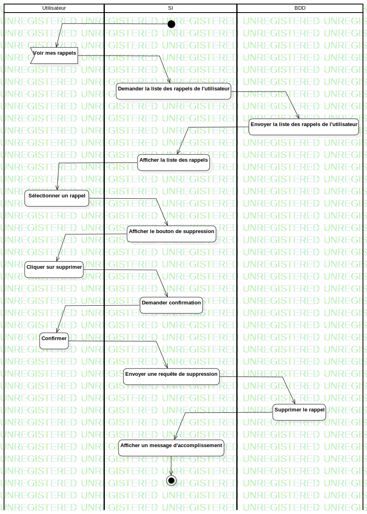

ActD Supprimer un rappel
UMLActivity
Untitled
::
Rappel
::
ActD Supprimer un rappel
Description
none
Diagrams

ActD Supprimer un rappel
Groups
Utilisateur
SI
BDD
Edges
(InitialNode1→Voir mes rappels)
(Voir mes rappels→Demander la liste des rappels de l'utilisateur)
(Demander la liste des rappels de l'utilisateur→Envoyer la liste des rappels de l'utilisateur)
(Envoyer la liste des rappels de l'utilisateur→Afficher la liste des rappels)
(Afficher la liste des rappels→Sélectionner un rappel)
(Sélectionner un rappel→Afficher le bouton de suppression)
(Afficher le bouton de suppression→Cliquer sur supprimer)
(Cliquer sur supprimer→Demander confirmation)
(Demander confirmation→Confirmer)
(Confirmer→Envoyer une requête de suppression)
(Envoyer une requête de suppression→Supprimer le rappel)
(Supprimer le rappel→Afficher un message d'accomplissement)
(Afficher un message d'accomplissement→ActivityFinalNode1)
Properties
Name
Value
name
ActD Supprimer un rappel
stereotype
null
visibility
public
isReentrant
true
isReadOnly
false
isSingleExecution
false
Owned Elements
ActD Supprimer un rappel